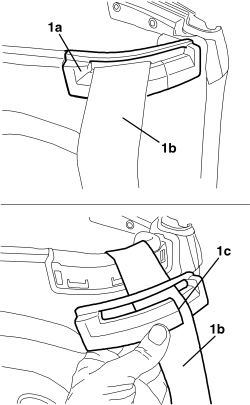

7040H69 TRIM ON CENTRE PILLAR FOR FRONT SEAT BELT (ONE), LEFT OR RIGHT - R.R.
- Path
- Procedures > 70 FITTINGS > 7040 BODY INTERIOR FITTINGS AND TRIM > 7040H ROOF PANEL AND PILLARS LINING > 7040H69 TRIM ON CENTRE PILLAR FOR FRONT SEAT BELT (ONE), LEFT OR RIGHT - R.R.
- Kind
- repair procedure (removal / refitting; the operation number is the code)
- Applies to
- engines: 2.2 JTS, 3.2 JTS; all production periods; only with equipment: Spider
- Interactive page
- https://sloeber94.github.io/elrnDB-aBrrSpdr/en/#/946004127
Applies to: engines: 2.2 JTS, 3.2 JTS; all production periods; only with equipment: Spider
 Removing
Removing
 Refitting
Refitting- Using the electric control, slightly raise the hood compartment cover or the 5th arc (depending on whether the hood is open or closed).
1. Release the seat belt idler trim (1a) from the housing, then remove it passing the seat belt (1b) through the slot (1c).

Applies to: engines: 2.2 JTS, 3.2 JTS; all production periods; only with equipment: Spider
Refitting
Removing- Check that the panel is not damaged.
- Attach the trim to the seat belt passing it through the slot, then attach the actual trim in position.
- Return the hood to the correct position using the electric control.